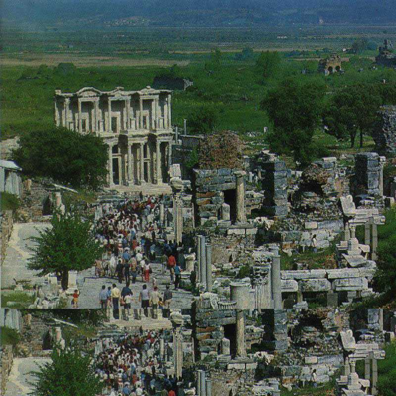
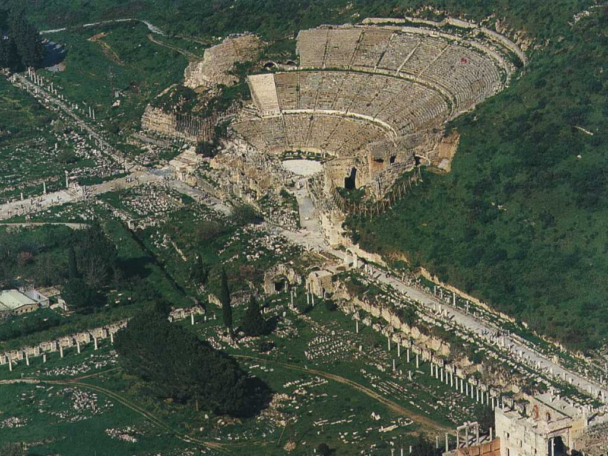
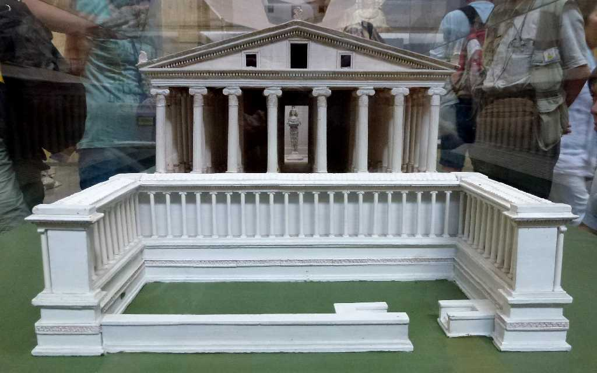
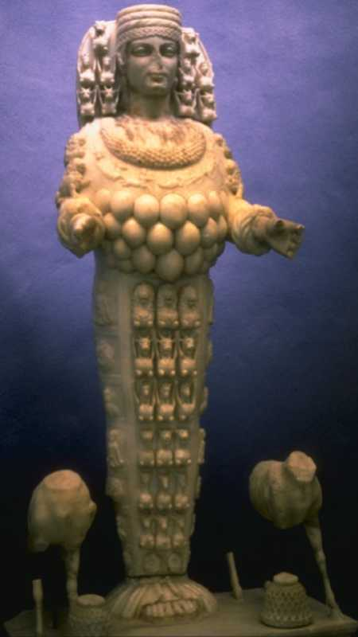
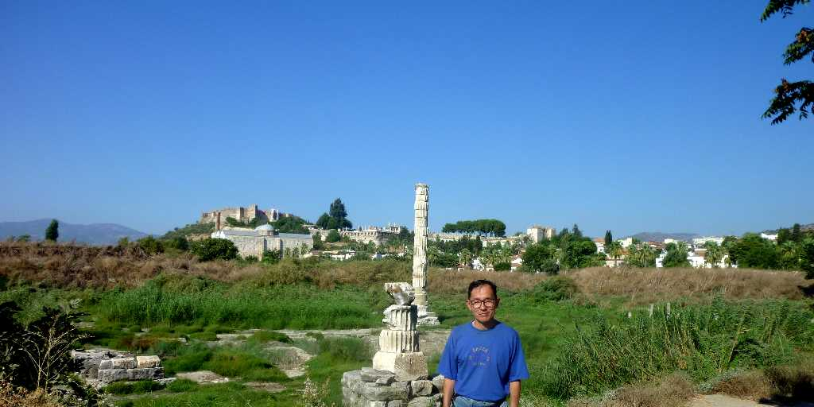
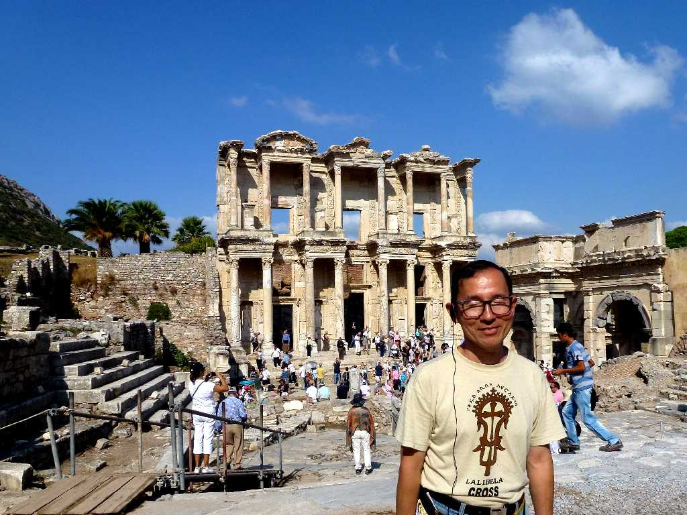

Celsus Library Efes
紀元前１１世紀にアテネの王子が建設したといわれる都市 ローマ時代に１２万冊の蔵書を誇った図書館跡 ２万５千人収容できる円形劇場 世界の七不思議の一つアルテミス神殿跡から発掘されたアルテミス神像など３千年の歴史が詰まっている

Efes
世界一周クルーズで約３０年ぶりの再訪問
August 30 2010 Theater Efes

Artemis Temple
世界の七不思議の一つアルテミス神殿

Artemis

August 30 2010 Artemis Temple

September 23 2011 Celsus Library Efes
昨年の世界一周クルーズに加えトルコ７,３００ｋｍバスの旅で３度目の訪問となった